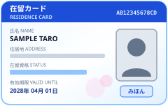
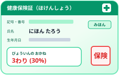
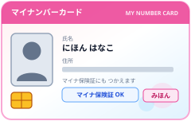

病院(びょういん)で ひつような カード（①〜③）
Cards You Need at the Hospital（p.28）
病院(びょういん)で ひつような カード
Cards You Need at the Hospital (①〜③)
① 在留(ざいりゅう)カード
① Residence Card
外国人(がいこくじん)の みぶんしょう
・なまえ ・住所(じゅうしょ) ・在留資格(ざいりゅうしかく)が かいてあります。
びょういんで、かならず みせます。
This is the ID card for foreign residents in Japan. It shows your name, address, and residence status. You must show this card at the hospital.
② 健康保険証(けんこうほけんしょう)
② Health Insurance Card
びょういんの おかねが 3わり(30%) に なります（70%は 日本 が はらいます）。
ほけんしょうがない と、10わり(100% ぜんぶ) はらいます。
・住民票(じゅうみんひょう)の てつづきがおわると、国民健康保険(こくみんけんこうほけん)に はいれます。
・会社(かいしゃ)で はたらくひとは、社会保険(しゃかいほけん)に はいれます。
With this card, you pay 30% of the medical cost. Japan pays 70%. If you do not have this card, you must pay 100% of the cost.
If your Residence Registration (Juminhyo) is accepted, you can join National Health Insurance. If you work for a company, you join Social Insurance.
③ マイナンバーカード
③ My Number Card
日本(にほん)に すむ人(ひと)の こじんばんごうのカード。
保険証(ほけんしょう)と いっしょ にできる【マイナ保険証(ほけんしょう)】に できます。外国(がいこく)のひとは、いまのカードにしていないことが おおいです
This is the personal number card for people who live in Japan. You can make it a "My Number Health Insurance Card". Many foreign residents do not make this card.
① もっているカード：
② うけつけで： すみません。 を もってきました。
③ ほけんしょうは 。